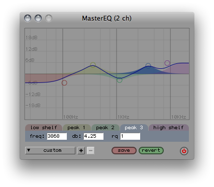

MasterEQ a global equaliser with graphical interface
part of wslib
** This class requires the TabbedView Quark **
MasterEQ provides a user interface for the BEQSuite filters, in the form of a parametric EQ. The MasterEQ is always inserted at the end of the processing chain, so any sound produced with SuperCollider wil go through the eq. The setting is the same for all channels.
There is a preset system included which allows users to add and recall settings. The settings can also be saved to disk with the "save" button. The presets and current settings are then saved in the SuperCollider application folder in a text file named "eq-prefs.txt", and will be automatically loaded the next time MasterEQ is called.
MasterEQ survives cmd-period calls.

See also: BEQSuite
Creation / Class Methods
*new (numCha, server)
This method creates a new instance of MasterEQ. There can be only one MasterEQ at a time.
numCha - number of channels. Default value is 2.
server - the server on which the EQ runs. The default is Server.default
s.boot;
MasterEQ(2); // opens and runs the EQ in 2-channel mode
MasterEQ(4); // replaces current eq with 4-channel version
*stop
Stop the EQ
MasterEQ.stop; // notice the power button in the right corner turn gray
*start
Start the EQ. Also opens a new instance if not already opened, based on the most recently set number of channels.
MasterEQ.start;
Accessing Instance and Class Variables
*window
Pointer to the EQ window.
MasterEQ.window.view.background_( Gradient( Color.gray(0.58), Color.white, \v ) );
*eq
eq is a dict (Event) with all used variables and settings of the EQ. Please study the source code of this class to find out what is in there and how to acces. Easy scripting methods might be added in a later stage.
( // set random db values
MasterEQ.eq[ \frdb ] = [ [ 100, 10.rand2, 1 ], [ 250, 10.rand2, 1 ], [ 1000, 10.rand2, 1 ],
[ 3500, 10.rand2, 1 ], [ 6000, 10.rand2, 1 ] ];
MasterEQ.eq[ \send_current ].value;
MasterEQ.eq[ \uvw ].refresh;
MasterEQ.eq[ \tvw_refresh ].value;
MasterEQ.eq[ \pumenu_check ].value;
)